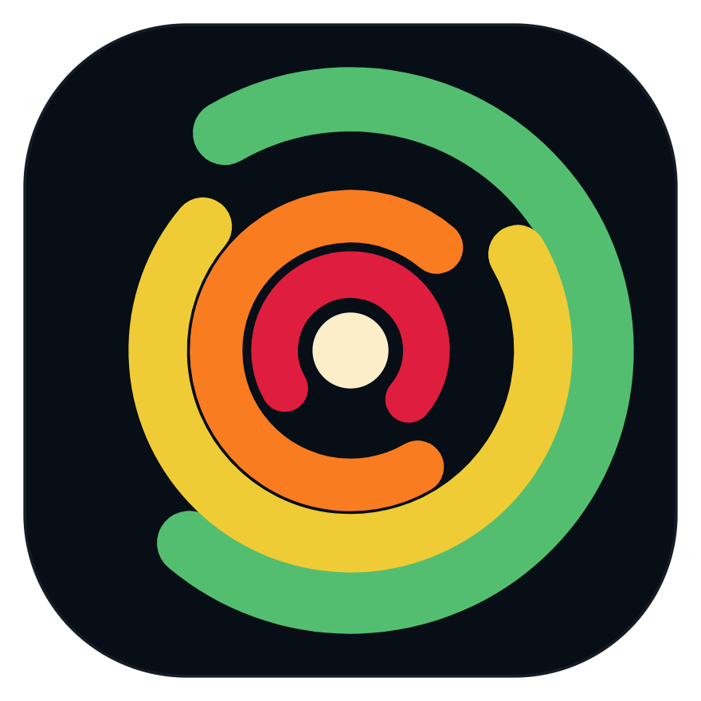

01
Your workspace, your way.
Move from a focused single view to a 3×3 analysis grid. Link location, time, product, palette, or zoom independently—only where it helps.

WxLens View on GitHubOpen-source weather intelligence
A modern radar workstation built for people who need the full picture—without a subscription, a locked ecosystem, or a dated interface.
Phase 1 in active development · Not yet a finished public release
Built for serious weather work
One workspace, many perspectives
Built from the ground up around the way weather actually gets analyzed: in context.
Move from a focused single view to a 3×3 analysis grid. Link location, time, product, palette, or zoom independently—only where it helps.
NEXRAD Level 2 and Level 3 products rendered on the GPU over an interactive vector map.
Move between live and archived data with a purpose-built timeline, playback controls, and local caching.
Inspect range, bearing, and beam geometry. Pin useful analysis to the map or save places for later.
Bring warnings, watches, radar sites, and placefile overlays into the same geographic workspace.
Designed beyond radar
Radar is the first complete data domain—not a constraint baked into the interface. WxLens has a common visualization pipeline so future data sources can arrive without another rewrite.
Read the architecture roadmap →Built in the open
Modern workflows, analysis tools, performance validation, and release readiness.
In progressRegional perspective with multiple sources composed into a continuous picture.
Satellite, soundings, forecast models, and richer atmospheric context.
Volumetric exploration when the underlying platform and data are ready.
No paywalls. No black boxes.
WxLens is MIT-licensed and developed in public. Inspect the architecture, build it yourself, report an issue, or help shape what comes next.